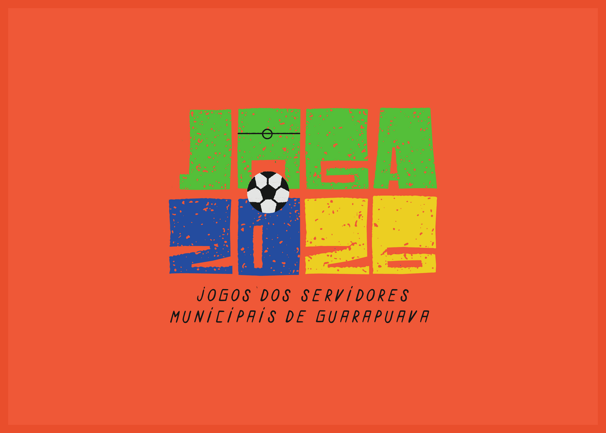
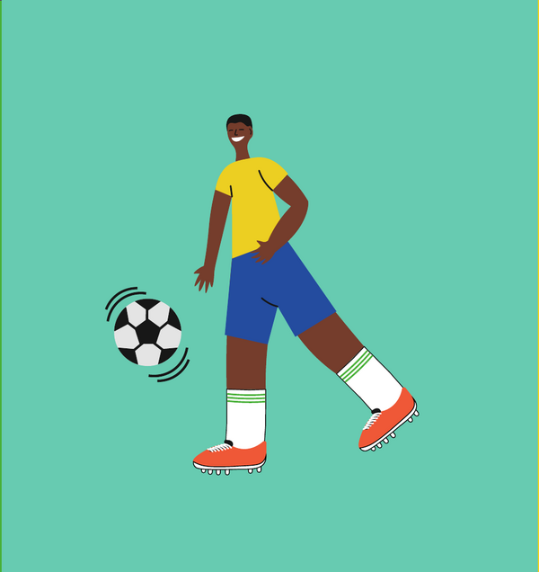
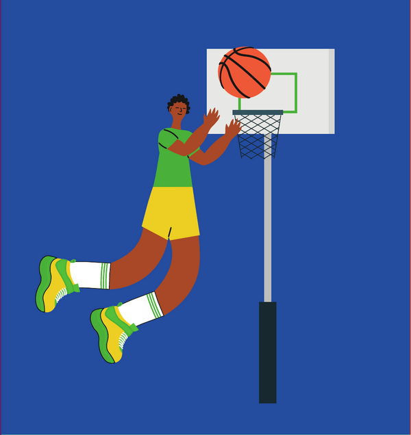
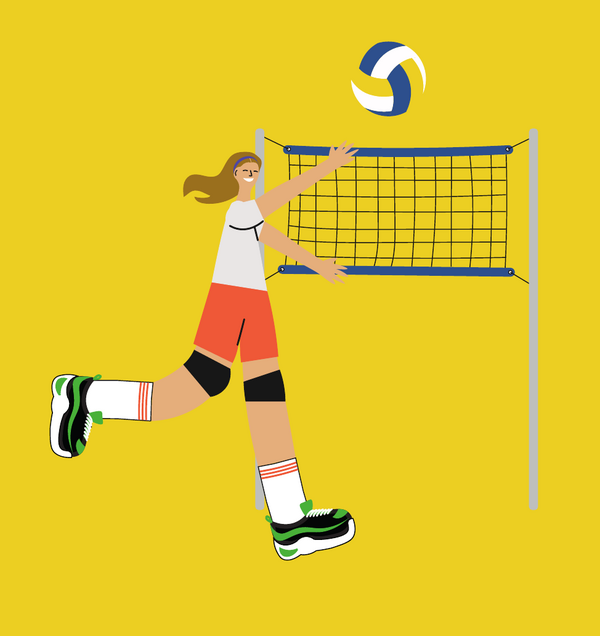

Voleibol
Quadra · 6x6
01
Jogos dos Servidores Municipais de Guarapuava.
Nove dias de esporte, integração e orgulho — vestindo a mesma camisa.
Sobre o JOGA
O JOGA é o programa oficial de integração entre os servidores municipais de Guarapuava através do esporte. Cada modalidade é uma chance de criar laços, mover o corpo e celebrar quem faz a cidade acontecer todo dia.
Inspirados pela paixão brasileira pelo futebol e pela vibração da torcida em ano de Copa do Mundo, trouxemos cores, energia e identidade própria para os jogos internos de 2026. Moderna, vibrante, a cara do Brasil — e dos nossos servidores.



Modalidades
De disputas técnicas a clássicos de quadra, o JOGA 2026 reúne servidores em modalidades que celebram movimento, estratégia e parceria.
Quadra · 6x6
01Campo · 7x7
02Quadra · 5x5
03Quadra · 3x3 streetball
04Tradicional · em equipes
05Areia · duplas
06Mesa · individual / duplas
07Rua · diferentes percursos
08Pista · tradicional
09Natureza · ar livre
10Mental · individual
11Força · equipes
12Cada modalidade tem regulamento próprio — em breve, no site oficial.
Equipes
Servidores são divididos por equipes coloridas que carregam, cada uma, sua bandeira, seu grito e sua história dentro do JOGA.
Equipe
"Mar de servidores em campo."
Equipe
"O verde que vibra no estádio."
Equipe
"A energia do sol em quadra."
Equipe
"Tradição em movimento."
Equipe
"Força e foco em cada jogada."
Equipe
"O calor da torcida em pessoa."
Regulamento
Em breve, todos os regulamentos oficiais por modalidade estarão disponíveis aqui — em PDF, prontos para consulta a qualquer momento.
Diretrizes do programa, inscrições, faixas etárias e calendário oficial.
Em breve12 documentos individuais, com regras específicas e arbitragem.
Em breveInscrição, autorização e responsabilidades dos atletas-servidores.
Em brevePlacares
Em outubro, esta página vai vibrar em tempo real com os jogos do JOGA 2026. Por enquanto, uma prévia do que vem aí.
EQUIPE AZUL
Servidores · Setor A
EQUIPE LARANJA
Servidores · Setor B
VOLEIBOL · SEMI
ENCERRADO
FUTSAL · OITAVAS
ENCERRADO
BASQUETE 3X3
ENCERRADO
CABO DE GUERRA
AO VIVO · DEMONSTRAÇÃO
| # | Equipe | V | E | D | Pts |
|---|---|---|---|---|---|
| 1 | Laranja | 5 | 1 | 0 | 16 |
| 2 | Verde | 4 | 1 | 1 | 13 |
| 3 | Azul | 3 | 2 | 1 | 11 |
| 4 | Amarelo | 2 | 2 | 2 | 8 |
| 5 | Preto | 1 | 2 | 3 | 5 |
| 6 | Branco | 1 | 0 | 5 | 3 |
* Tabela demonstrativa. Os números reais serão atualizados durante o evento.
Retrospectiva
Reveja a emoção, a vibração e o orgulho que tomaram conta de Guarapuava na última edição.
JOGA 2025 · Highlights oficiais · Secretaria Municipal de Comunicação
Vídeo provisório de banco de imagens — será substituído pelo institucional oficial do JOGA 2025.
Prepare-se
Aqui, cada servidor veste a camisa. Cada jogo é um abraço entre departamentos. Cada conquista, uma vitória da nossa cidade.
As inscrições serão abertas em breve. Em caso de dúvidas, procure a Secretaria Municipal de Comunicação.